FACTION 01
私掠船
プリンセス・ブルーアネモネ号
私掠船とは、国から許可を受けて敵国の船を攻撃する民間船のこと。
私欲の限りを尽くし国を支配するポルトロッド家に対抗するため、グートマン伯爵が秘密裏に結成したのが私掠船プリンセス・ブルーアネモネ号である。
国や所属にこだわらず、任務に従いはびこる腐敗を裁く。
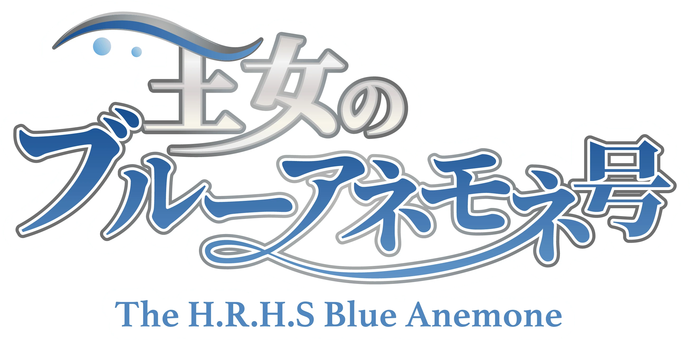
THE H.R.H.S BLUE ANEMONE / OFFICIAL WEBSITE
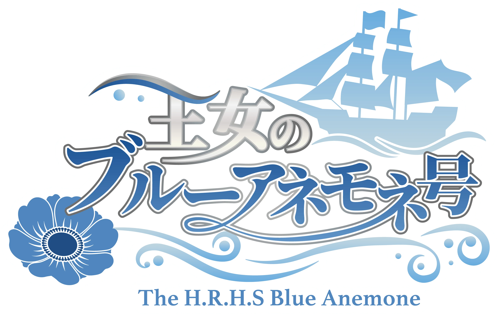
誰に何を言われても胸を張れる生き方を。
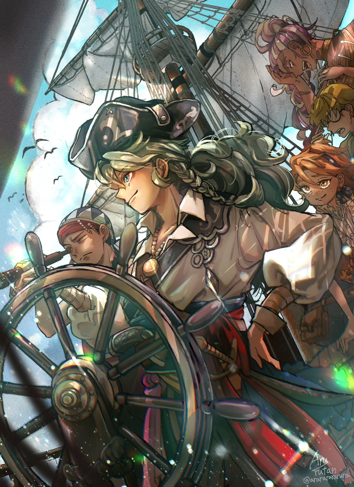
YouTube Shorts にて総再生数3500万回を超える、あるみらんのメインシリーズ。
「どんな状況であっても、どう生きるか、どんな人間になるかを選ぶのは自分自身」というテーマを軸に、海を舞台とした冒険、仲間との絆、過去や因縁に立ち向かうキャラクターたちを描いた物語です。
2024年からSNSを中心に、イラスト・漫画・動画などを発信。漫画を作品の核として、SNSの動画やグッズなどを入り口に、より多くの方に物語を知ってもらうことを目指しています。
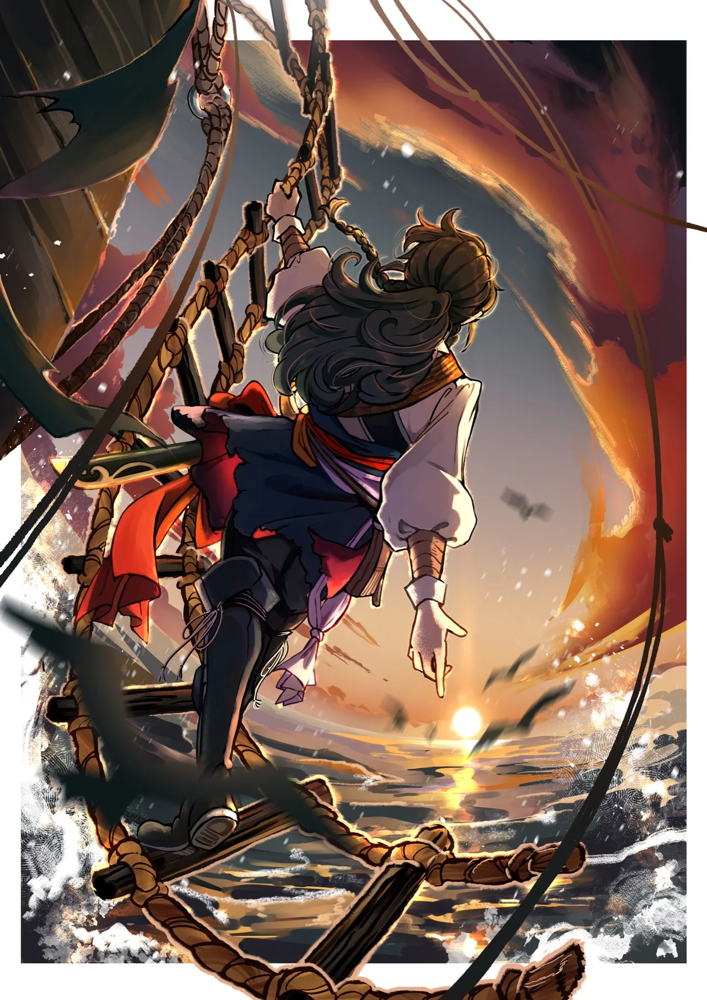
「故郷の海は、
帰るべき場所では
なくなった―...」
18歳の青年アドニスは、皮肉にも父と仲間を殺した国の私掠船船長となってしまった。
離れ離れになった妹のイヴを探しながら、様々な立場・過去をもつ仲間と共に、海を国を駆け巡る。
海を動かす、主要派閥。
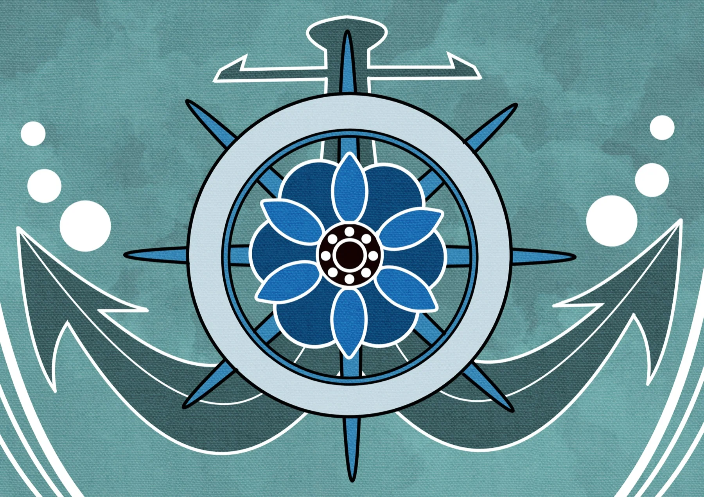
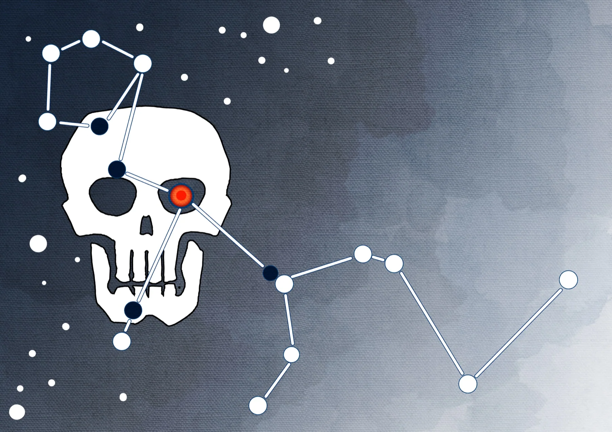
私掠船とは、国から許可を受けて敵国の船を攻撃する民間船のこと。
私欲の限りを尽くし国を支配するポルトロッド家に対抗するため、グートマン伯爵が秘密裏に結成したのが私掠船プリンセス・ブルーアネモネ号である。
国や所属にこだわらず、任務に従いはびこる腐敗を裁く。
CREW OF THE PRINCESS BLUE ANEMONE
CAPTAIN / NAVIGATOR
私掠船プリンセス・ブルーアネモネ号の船長。温和で思慮深く慕われているがたまにずれている。離れ離れになってしまった妹の行方を探している。航海士としての腕は一流。
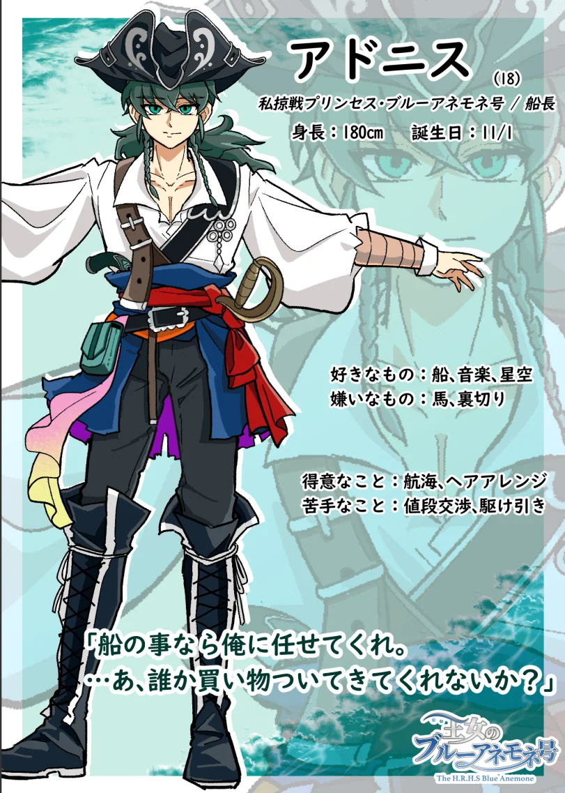
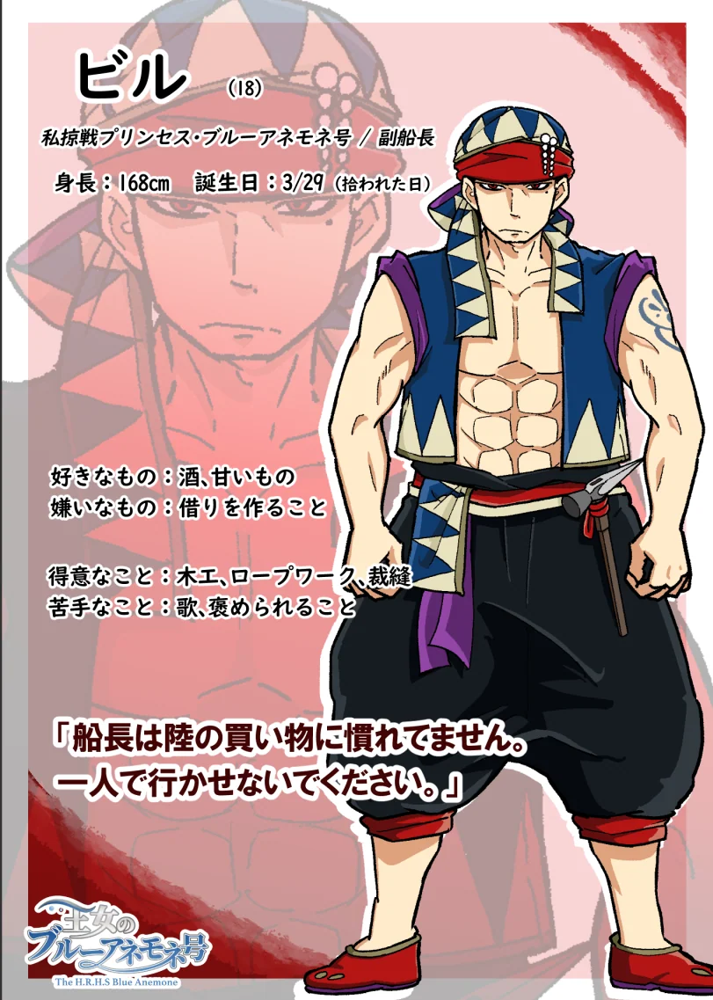
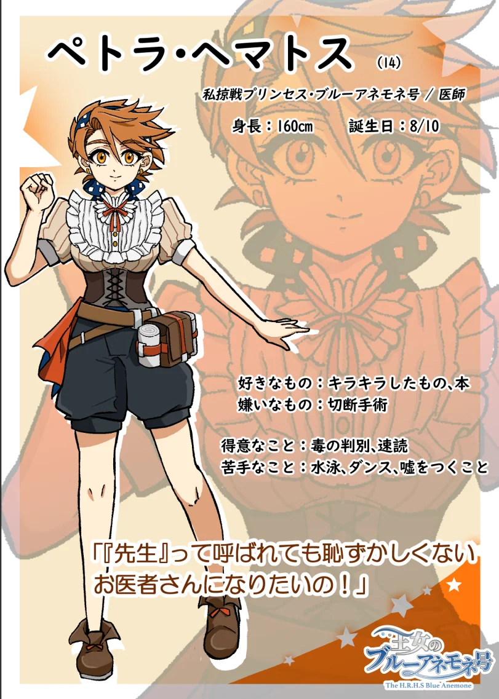
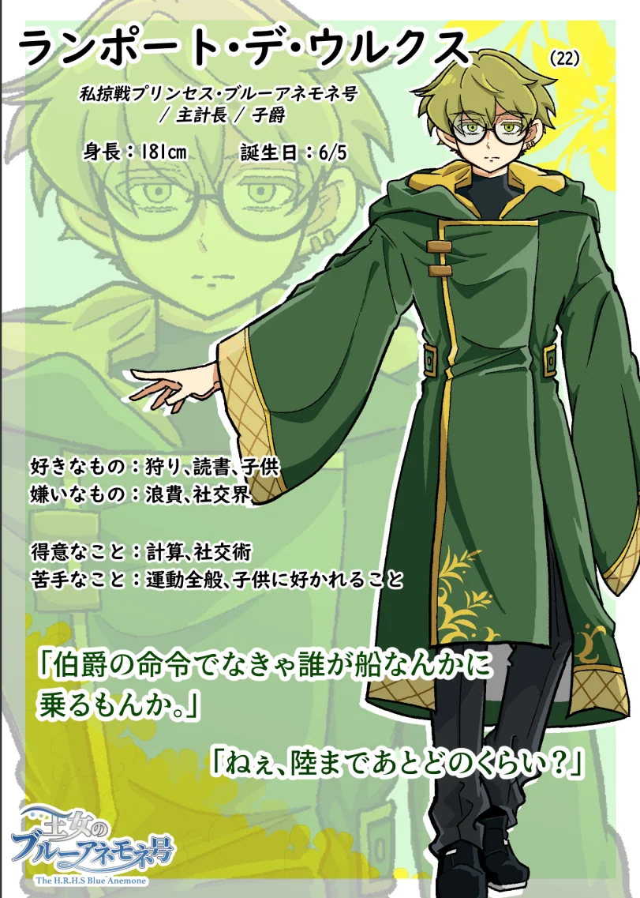
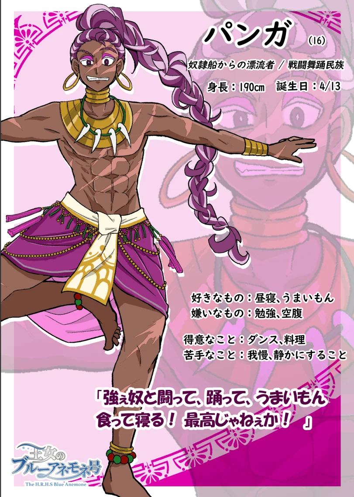
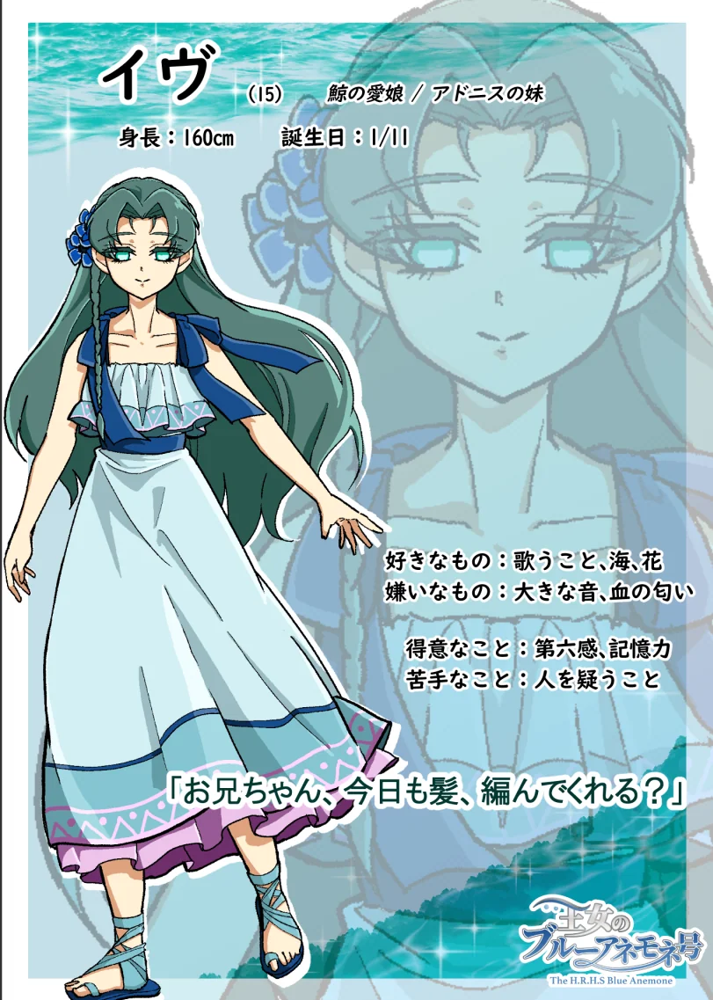
CHARACTER RELATIONSHIP
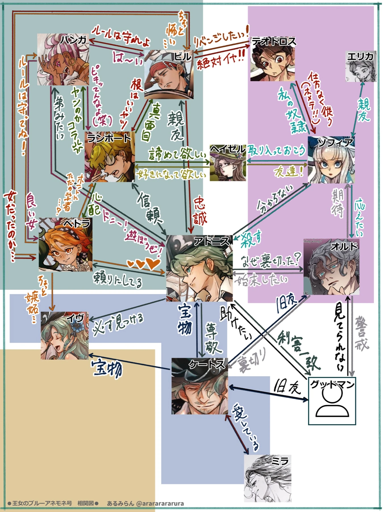
航海の断片。
専用ギャラリー素材を追加予定